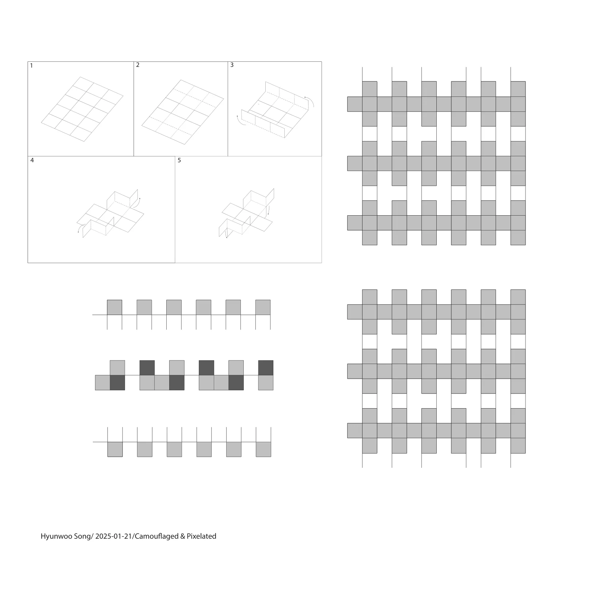
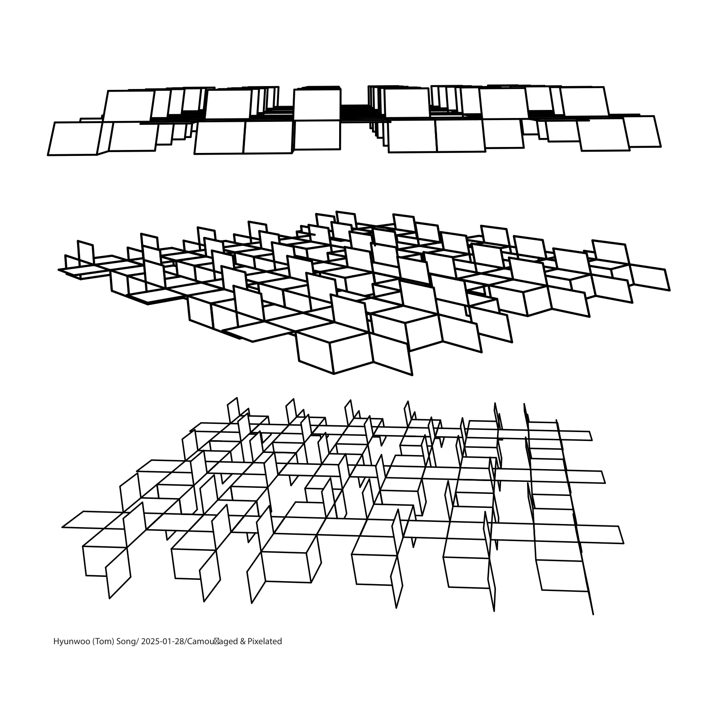

DES 050 · PROJECT 1 · WINTER 2025
Camouflaged & Pixelated
Modular form explorations developed from physical studies into repeatable geometric systems.
COURSEDES 050 · UC Davis
YEAR2025
FOCUSForm exploration / Modular design

A vocabulary of modules
The initial pinup documents a collection of small white structural studies, comparing how individual pieces change when combined, stacked, and repeated.
From unit to grid
Subsequent drawings compare different assemblies and arrangements of a recurring unit, showing how a single geometry can be organized into a larger patterned field.

A three-dimensional assembly
The final pinup presents a sequence of geometric structures, progressing from an organized strip into a more complex spatial assembly.
